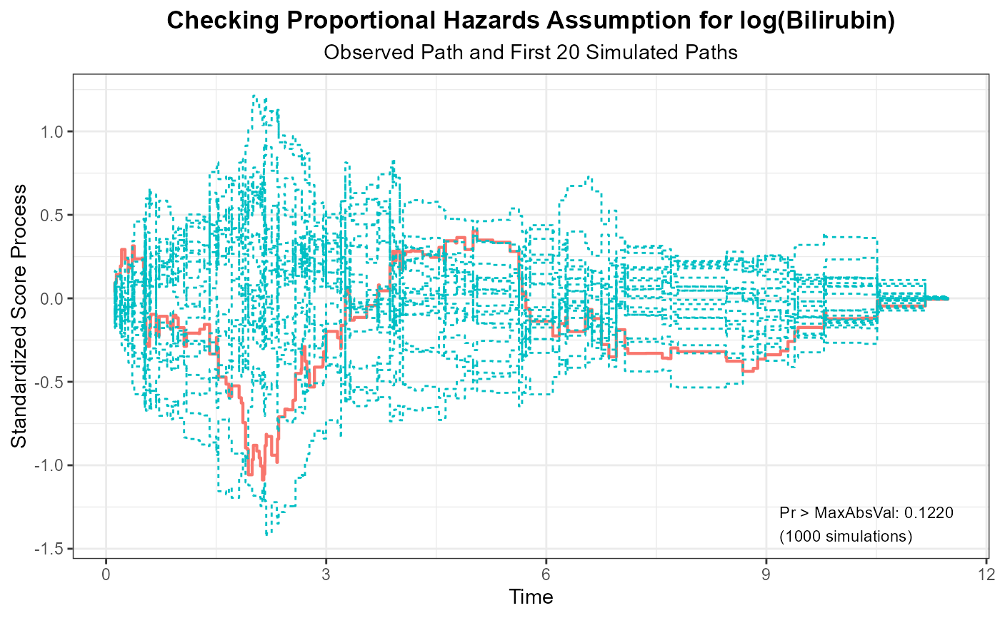
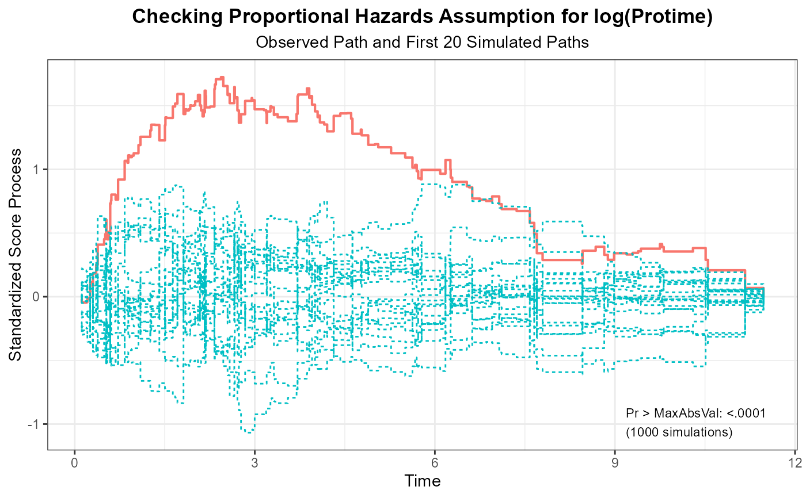
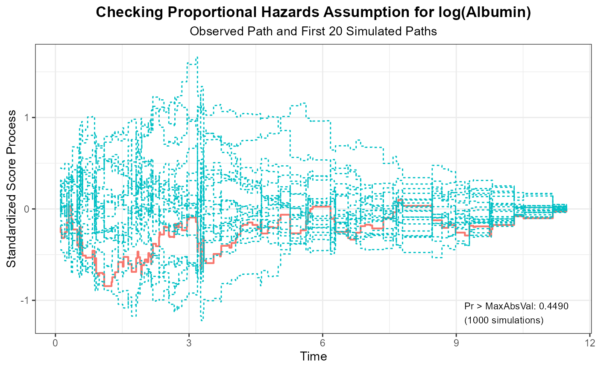
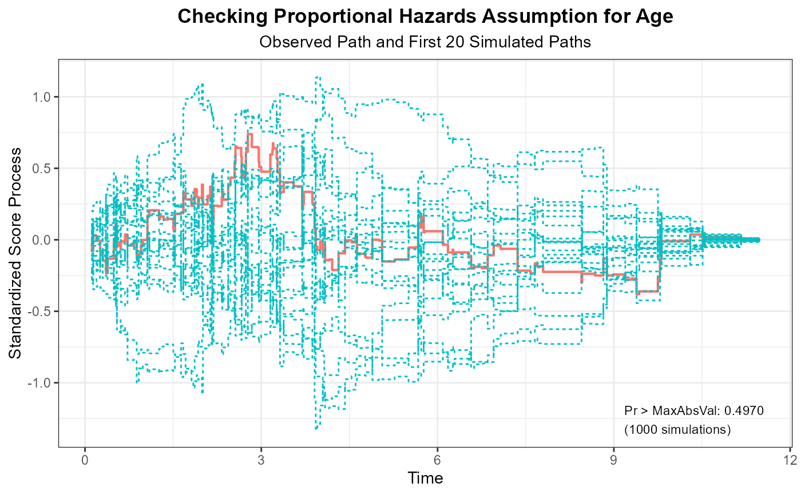
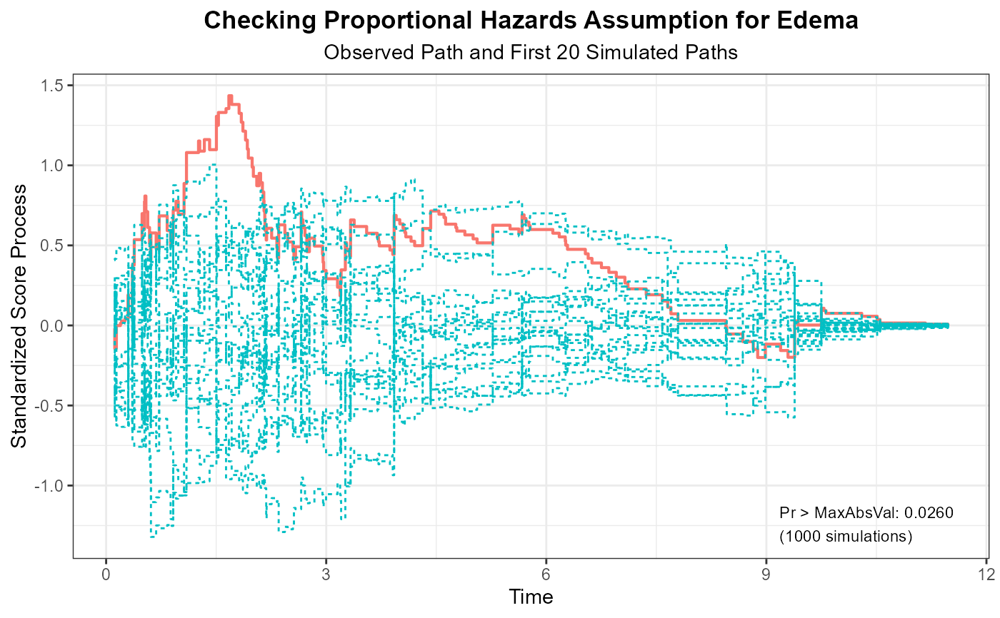

R/survival_analysis.R
assess_phregr.RdObtains the standardized score processes and the simulated distribution under the null hypothesis as well as the p-values for the supremum tests.
assess_phregr(object, resample = 1000, seed = 12345)A list with the following components:
time the unique event times.
score_t the observed standardized score process.
score_t_list a list of simulated standardized score processes
under the null hypothesis.
max_abs_value the supremum of the absolute value of the observed
standardized score process for each covariate and the supremum of
the sum of absolute values of the observed standardized score processes
across all covariates.
p_value the p-values for the supremum tests for each covariate
and the global test.
The supremum test corresponds to the ASSESS statement with ph
option of SAS PROC PHREG.
D. Y. Lin, L. J. Wei, and Z. Ying. Checking the Cox model with cumulative sums of martingale-based residuals. Biometrika 1993; 80:557-572.
fit <- phregr(data = liver, time = "Time", event = "Status",
covariates = c("log(Bilirubin)", "log(Protime)",
"log(Albumin)", "Age", "Edema"),
ties = "breslow")
aph <- assess_phregr(fit, resample = 1000, seed = 314159)
aph
#> covariate max_abs_value resample seed p_value
#> 1 log(Bilirubin) 1.0880 1000 314159 0.1220
#> 2 log(Protime) 1.7243 1000 314159 <.0001
#> 3 log(Albumin) 0.8443 1000 314159 0.4490
#> 4 Age 0.7387 1000 314159 0.4970
#> 5 Edema 1.4350 1000 314159 0.0260
#> 6 GLOBAL 4.5107 1000 314159 0.0080
plot(aph, nsim = 20)
#> [[1]]

#>
#> [[2]]

#>
#> [[3]]

#>
#> [[4]]

#>
#> [[5]]

#>